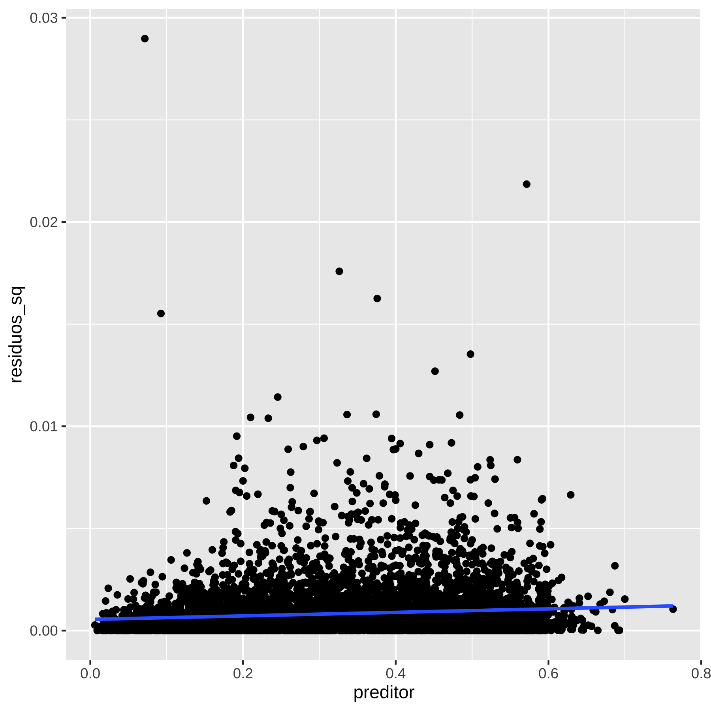
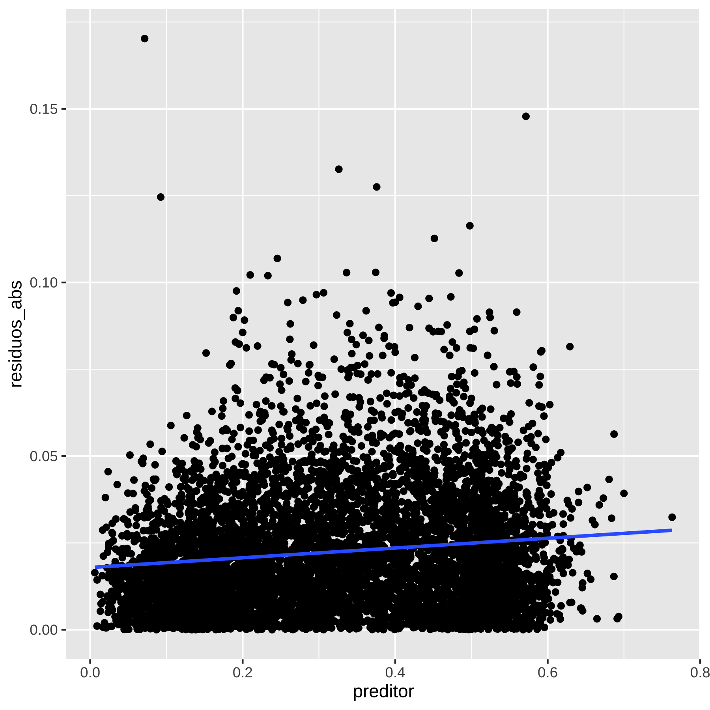
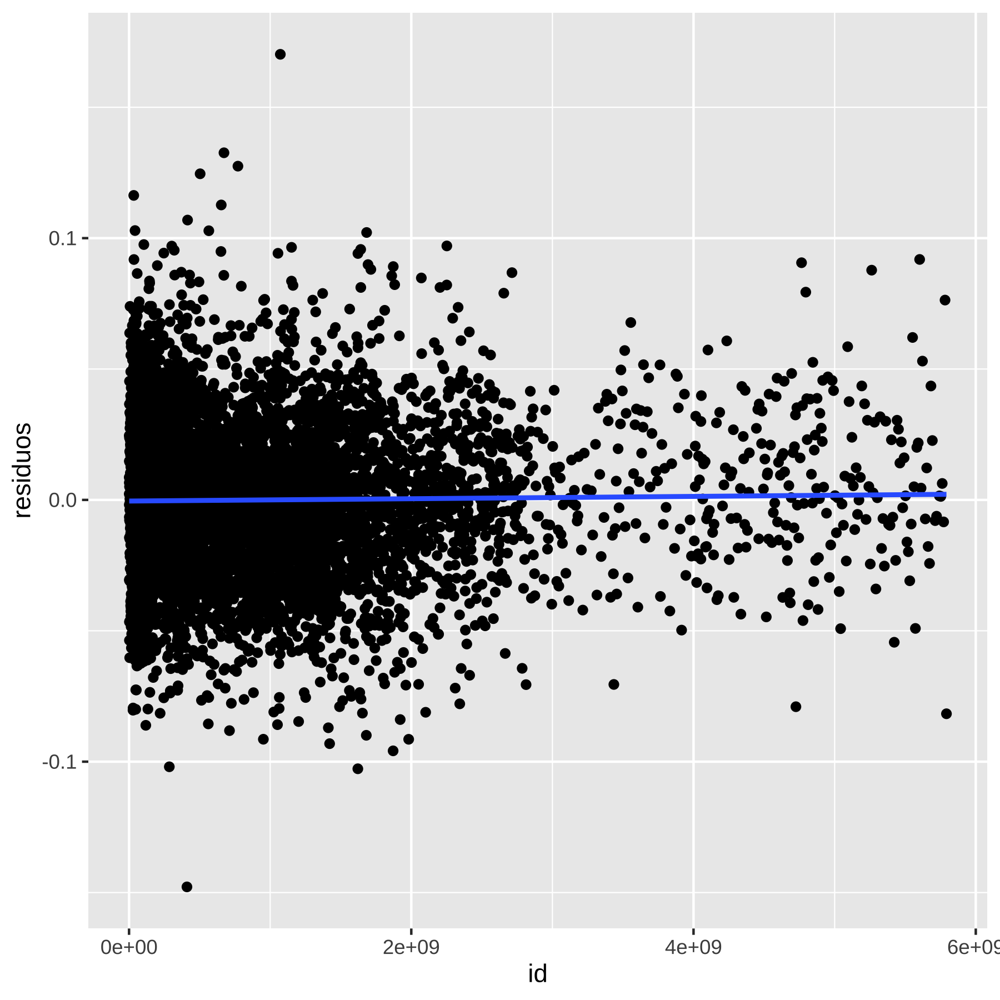
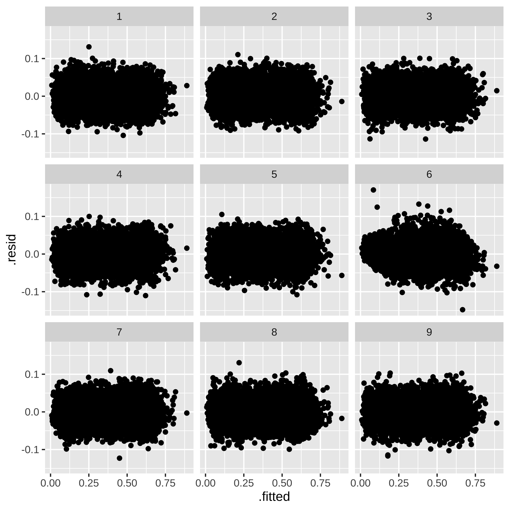
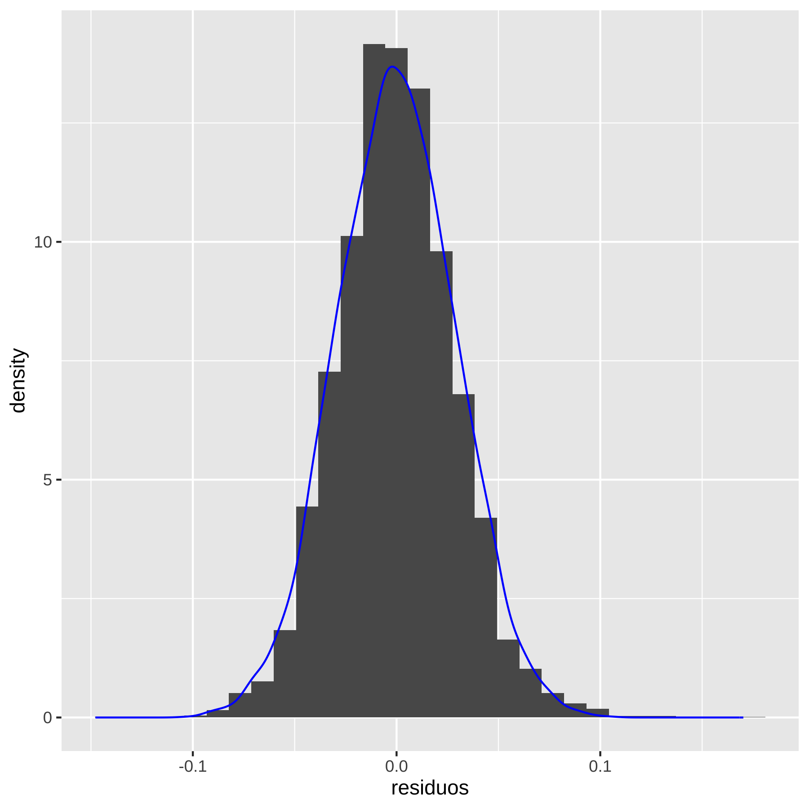
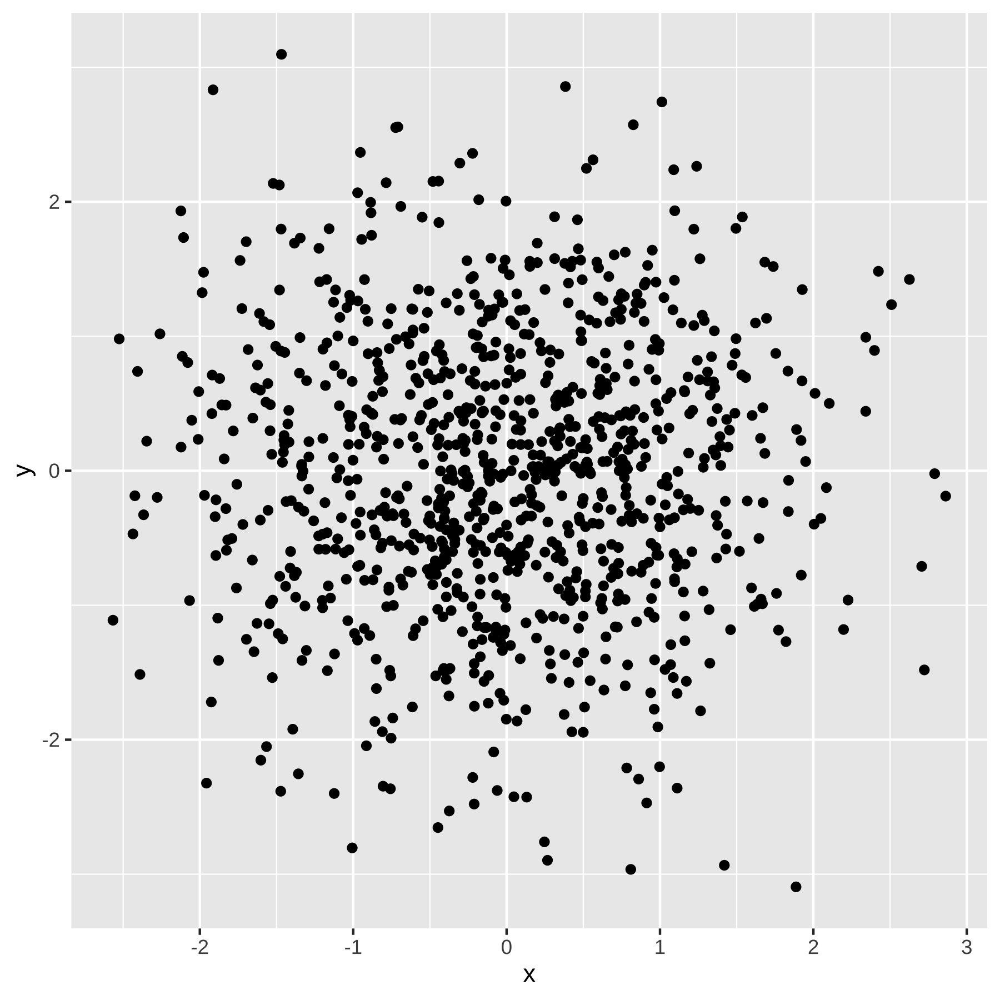

Capítulo 10 - Checagem
Antes de proceder com a parte de inferência estatística, vamos apresentar como realizar checagem do modelo. A razão é que, em geral, a teoria de inferência depende da suposição do modelo ser correta. Então, faz sentido primeiro checar se o modelo satisfaz os pressupostos, e depois fazer inferência.
Vamos então apresentar os principais testes e checagem que devemos fazer com nosso modelo de regressão linear. Aqui vale uma comentário sobre inferência Bayesiana, que não estamos utilizando em nosso curso, mas que eu particularmente utilizo em minha pesquisa aplicada. O prática de modelagem padrão na inferência Bayesiana é escrever formalmente uma verossimilhança (como fizemos com MLE) e estimar distribuições de porbabilidades para os parâmetros, e checar o modelo para ver se essas distribuições fazem sentido. Portanto, a checagem do modelo acontece automaticamente e de maneira integrada, ao contrário do que faremos aqui. Ou seja, recomendo que vocês aprendam a fazer inferência Bayesiana e prescindam de toda essa maquinaria que irei apresentar.
10.1 Resíduos
Os resíduo para cada observação \(i\) é a diferença entre a previsão do modelo de regressão \(\hat{y_i}\) e o valor observado \(y_i\), as vezes chamado de \(\hat{e}\), para diferenciar do erro populacional, \(e\). No caso de nosso modelo de regressão linear com um único preditor, temos:
\[ \hat{e_i} = y_i - (\hat{\alpha} + \hat{\beta} \cdot x_i) \] Eis algumas propriedade dos resíduos.
Os resíduos deveriam ter esperança zero, condicional aos preditores. Formalmente, \(\mathbb{E}[\hat{e}|X=x] = 0\)
Se estivermos supondo homecedasticidade, devem ter variância constante (o que raramente será o caso).
Por se tratar de uma amostra, a probabilidade dos resíduos serem completamente não-correlacionados entre si é zero, contudo a correlação deve ser baixa e convergir para zero à medida que \(n\) cresce para infinito.
Se estamos supondo que o erro é Gaussiano (Normal), como no modelo de MLE, os resíduos devem também ser normais.
Cada uma dessas propriedades nos leva a um diagnóstico ou checagem.
10.2 Modelo no R
Para fazer os testes do nosso modelo, vamos fazer um modelo preditivo. Vou utilizar a votação no primeiro turno presidencial de 2018 para prever o voto no segundo turno, no estado de Alagoas. Para tanto, vamos baixar os dados de votação presidencial de 2018 ao nível de seção eleitoral do portal de dados abertos do TSE. Podem baixar o arquivo clicando no link do dataset. Vamos deszipar e depois filtrar os dados para o estado de Alagoas (para ter uma base de dados pequena).
library(data.table)
# lista o nome do arquivo em csv
# unzip(here("dados", "votacao_secao_2018_BR.zip"), list = TRUE)
#read data1.csv into data frame
presid_al18 <- fread(here("dados","votacao_secao_2018_BR.csv"), encoding = "Latin-1")
# filtrando só AL
presid_al18 <- presid_al18 %>%
filter(SG_UF == "AL")
# modelo voto em Bolsonaro 1t prediz voto no 2t
# descobre o que é voto nulo e branco
presid_al18 %>%
group_by(NM_VOTAVEL) %>%
summarise(max(NR_VOTAVEL))## # A tibble: 15 × 2
## NM_VOTAVEL `max(NR_VOTAVEL)`
## <chr> <int>
## 1 ALVARO FERNANDES DIAS 19
## 2 BENEVENUTO DACIOLO FONSECA DOS SANTOS 51
## 3 CIRO FERREIRA GOMES 12
## 4 FERNANDO HADDAD 13
## 5 GERALDO JOSÉ RODRIGUES ALCKMIN FILHO 45
## 6 GUILHERME CASTRO BOULOS 50
## 7 HENRIQUE DE CAMPOS MEIRELLES 15
## 8 JAIR MESSIAS BOLSONARO 17
## 9 JOSE MARIA EYMAEL 27
## 10 JOÃO DIONISIO FILGUEIRA BARRETO AMOEDO 30
## 11 JOÃO VICENTE FONTELLA GOULART 54
## 12 MARIA OSMARINA MARINA DA SILVA VAZ DE LIMA 18
## 13 VERA LUCIA PEREIRA DA SILVA SALGADO 16
## 14 VOTO BRANCO 95
## 15 VOTO NULO 96# 95 e 96
presid_al18_valido <- presid_al18 %>%
filter(!NR_VOTAVEL %in% c(95,96)) %>%
group_by(NR_SECAO,NR_ZONA, CD_MUNICIPIO, NR_TURNO, NR_VOTAVEL ) %>%
summarise(validos = sum(QT_VOTOS)) %>%
mutate(bol_bolsonaro = NR_VOTAVEL == 17,
validos_bolsonaro = sum(validos*bol_bolsonaro)) %>%
summarise(total_validos = sum(validos),
validos_bolsonaro = max(validos_bolsonaro),
perc_bolsonaro = validos_bolsonaro/total_validos) %>%
dplyr::select(-total_validos) %>%
pivot_wider(id_cols = c(NR_SECAO, NR_ZONA, CD_MUNICIPIO), names_from = NR_TURNO, values_from = perc_bolsonaro) %>%
rename(perc_bolso_turno1 = '1',
perc_bolso_turno2 = '2')
# modelo de regressão
reg1 <- lm(perc_bolso_turno2 ~ perc_bolso_turno1, data = presid_al18_valido)
summary(reg1)##
## Call:
## lm(formula = perc_bolso_turno2 ~ perc_bolso_turno1, data = presid_al18_valido)
##
## Residuals:
## Min 1Q Median 3Q Max
## -0.147833 -0.018587 -0.000424 0.018027 0.170229
##
## Coefficients:
## Estimate Std. Error t value Pr(>|t|)
## (Intercept) 0.0011688 0.0008273 1.413 0.158
## perc_bolso_turno1 1.1640700 0.0022516 516.986 <2e-16 ***
## ---
## Signif. codes: 0 '***' 0.001 '**' 0.01 '*' 0.05 '.' 0.1 ' ' 1
##
## Residual standard error: 0.02885 on 6385 degrees of freedom
## Multiple R-squared: 0.9767, Adjusted R-squared: 0.9767
## F-statistic: 2.673e+05 on 1 and 6385 DF, p-value: < 2.2e-16presid_al18_valido %>%
ggplot(aes(x=perc_bolso_turno1, y=perc_bolso_turno2)) + geom_point() +
geom_abline(slope = coef(reg1)[2] , intercept = coef(reg1)[1], colour = "blue")
10.2.1 Resíduos contra o preditor
Se os resíduos devem ter \(\mathbb{E}[\hat{e}|X=x] = 0\), isso significa que para cada \(x_i\) os resíduos devem ter média zero. Em um gráfico, isso significa que, se eu tiver pontos suficientes na proximidade de cada \(x_i\), a dispersão dos resíduos deve ser aleatória, no sentido de não ter padrão claro, o que vai implicar uma reta horizontal cuja média é zero.
df <- data.frame(residuos = residuals(reg1), preditor = presid_al18_valido$perc_bolso_turno1)
df %>%
ggplot(aes(x=preditor, y = residuos)) + geom_point() + geom_smooth(method="lm", se=F)Se houver outros preditores, faça a mesma coisa e o gráfico também deve ser uma reta em cima do eixo \(x\).
10.2.2 Magnitude dos Resíduos Contra o Preditor
Uma vez que \(\mathbb{E}[\hat{e}|X] = 0\), segue-se que \(\mathbb{Var}[\hat{e}|X] = \mathbb{E}[\hat{e}^2|X]\).
Seja \(A\) uma v.a. Então, \(\mathbb{Var}[A|X] = \mathbb{E}[(A - \mathbb{E}[A|X])^2|X]\) \[ \mathbb{Var}[\hat{e}|X] = \mathbb{E}[(\hat{e} - \mathbb{E}[\hat{e}|X])^2|X] = \mathbb{E}[(\hat{e} - 0)^2|X] = \mathbb{E}[\hat{e}^2|X] \] Portanto, se estamos assumindo homecadisticidade, isto é, que \(\mathbb{Var}[\hat{e}|X] = \sigma^2\), podemos checar esta suposição olhando para a esperança condicional do quadrado dos resíduos. E podemos fazer isso plotando o gráfico do quadrado dos resíduos contra o preditor.
df <- data.frame(residuos_sq = residuals(reg1)^2, preditor = presid_al18_valido$perc_bolso_turno1)
df %>%
ggplot(aes(x=preditor, y = residuos_sq)) + geom_point() + geom_smooth(method="lm", se=F)
A reta deve ser horizontal, e não deveria ter mais pontos acima do que abaixo da reta. A altura da reta deveria ser aproximadamente o EQM. Conjuntos de pontos persistentemente acima ou abaixo da reta são sinais de problema com alguma de nossas hipóteses, ou há heterocedasticidade (a variância muda com o preditor) ou a forma funcional do modelo está errada de algum modo. No meu gráfico, a reta não é exatamente horizontal, mas talvez seja “good enough”. Uma forma de olhar isso é computar erros padrões que lidem com a heterocedasticidade. Voltaremos a isso mais à frente.
Ás vezes quando temos resíduos muito grandes, o quadrado deles fica gigante e o gráfico fica não-informativo (especialmente quando o modelo é problemático). Nesses casos, podemos plotar o valor absoluto dos resíduos, em vez do quadrado.
df <- data.frame(residuos_abs = abs(residuals(reg1)), preditor = presid_al18_valido$perc_bolso_turno1)
df %>%
ggplot(aes(x=preditor, y = residuos_abs)) + geom_point() + geom_smooth(method="lm", se=F)
10.2.3 Resíduos com dados Temporais e/ou Espaciais
Com frequência nossos dados possuem uma certa ordem, seja temporal e/ou espacial. Em um modelo simples, isso não deveria importar (nossa amostra supostamente é i.i.d, e os erros populacionais são não correlacionados entre si). Se os erros forem correlacionados, podemos usar algo chamado mínimos quadrados generalizados, o que também não iremos cobrir no curso. Então, deveríamos sempre fazer um plot dos resíduos contra o tempo, ou contra o espaço. Aqui, como a ordem é apenas espacial, vamos fazer isso.
Podemos fazer um plot dos resíduos contra seção.Vejamos como fica.
presid_al18_valido <- presid_al18_valido %>%
mutate(id_secao = paste0(NR_SECAO, NR_ZONA , CD_MUNICIPIO))
df <- data.frame(residuos = residuals(reg1), id = as.numeric(presid_al18_valido$id_secao))
df %>%
ggplot(aes(x=id, y = residuos)) + geom_point() + geom_smooth(method="lm", se=F)
Uma técnica simples, que é uma versão simplificada de algo mais formal chamado “permutation test”, é plotar os resíduos permutados aleatoriamente contra o plot real que queremos fazer. Vamos usar o pacote nullabor para isso. Vamos replicar o teste de homecedasticidade e olhar os resíduos ao quadrado contra os preditores, e olhar os resíduos contra os valores previstos Primeiro contra o preditor.
## Warning: package 'nullabor' was built under R version 4.3.2set.seed(1234) # Aleatoriza do mesmo jeito sempre
elec_reg <- data.frame(presid_al18_valido, .resid = residuals(reg1),
.predicted = model.matrix(reg1)[,2])
shuffled_residuals <- lineup(null_lm(perc_bolso_turno2 ~ perc_bolso_turno1,
method = "rotate"), true = elec_reg,
n = 9)
ggplot(shuffled_residuals, aes(x = .predicted, y = .resid^2)) +
geom_point() +
facet_wrap(vars(.sample))Depois contra os valores previstos.
elec_reg <- data.frame(presid_al18_valido, .resid = residuals(reg1), .fitted = fitted(reg1))
shuffled_residuals <- lineup(null_lm(perc_bolso_turno2 ~ perc_bolso_turno1,
method = "rotate"), true = elec_reg,
n = 9)
## decrypt("ve5B DEyE l6 GuClylu6 dT")
ggplot(shuffled_residuals, aes(x = .fitted, y = .resid)) +
geom_point() +
facet_wrap(vars(.sample))
A mensagem encriptada tem o plot real, contrao o nulo. Se for possível identificar o plot real, é porque existe algum padrão nos dados.
10.3 Normalidade dos resíduos
Se estamos supondo normalidade dos resíduos, podemos verificar se são de fato normais. Uma forma de verificar é plotando o histograma dos resíduos e por cima a densidade de uma distribuição normal com média zero (resíduos têm média zero) e desvio-padrão igual ao desvio-padrão dos resíduos.
df <- data.frame(residuos = residuals(reg1), preditor = presid_al18_valido$perc_bolso_turno1,
density_points = rnorm(length(residuals(reg1)) , 0, sd(residuals(reg1))))
print(sd(residuals(reg1)))## [1] 0.02884366df %>%
ggplot(aes(residuos)) + geom_histogram(aes(y=..density..)) + geom_density(aes(density_points), colour = "blue")## Warning: The dot-dot notation (`..density..`) was deprecated in ggplot2 3.4.0.
## ℹ Please use `after_stat(density)` instead.
## This warning is displayed once every 8 hours.
## Call `lifecycle::last_lifecycle_warnings()` to see where this warning was
## generated.
Uma alternativa mais tradicional são os chamados Q-Q plots, cujo nome deriva de sere um plot “quantil-quantil”. A função quantil me diz qual é o ponto que divide a minha distribuição de probabilidade em exatamente \(p\%\). Por exemplo, posso me perguntar qual ponto divide meus dados exatamente no meio (mediana), ou no primeiro quartil, primeiro percentil, em suma, em qualquer percentual da distribuição. O R tem uma função para isso que vale vermos para entender.
x <- rnorm( 1000)
q50 <- quantile(x, .5)
q025 <- quantile(x, .025)
q975 <-quantile(x, .975)
print(c(q50, q025, q975))## 50% 2.5% 97.5%
## -0.04257219 -1.91943889 1.83665303y <- rnorm(1000)
df <- data.frame(y=y, x=x)
# plot de x contra y
df %>%
ggplot(aes(x=x, y=y)) + geom_point()
# plot de x ordenado contra y ordenado
df %>%
ggplot(aes(x=sort(x), y=sort(y))) + geom_point() + geom_abline(intercept = 0, slope = 1, colour ="blue")Vejam que \(p\) varia entre \(0\) e \(1\), e o menor valor que a função quantil retorna é o menor valor possível da minha distribuição de probabilidade, e o maior é o máximo da distribuição de probabilidade. No caso da Normal, o mínimo é menos infinito e o máximo é mais infinito, porém, em uma amostra serão valores finitos.
Se plotarmos duas variáveis ordenadas, podemos verificar se têm a mesma distribuição. Em caso positivo, deveriam seguir uma linha reta de 45 graus. Quando queremos testar os resíduos, uma das variáveis são os resíduos e a outra a distribuição teórica dos mesmos (Normal).
O Q-Q plot de uma regressão é uma versão um pouco mais complicadinha disso, que não irei mostrar aqui (pois precisaria trabalhar com a inversa da distribuição Normal), mas a lógica final é a mesma. Podemos ver isso plotando o Q-Q plot do R, e um construído por nós, utilizando a lógica que apresentei.
df <- data.frame(residuos = residuals(reg1), preditor = presid_al18_valido$perc_bolso_turno1,
density_points = rnorm(length(residuals(reg1)) , 0, sd(residuals(reg1))),
fi_percentil = 1:length(residuals(reg1))/1:length(residuals(reg1)))
print(sd(residuals(reg1)))## [1] 0.02884366# plot de x ordenado contra y ordenado
df %>%
ggplot(aes(y=sort(residuos), x=sort(density_points))) + geom_point() +
geom_abline(intercept = 0, slope = 1, colour ="blue")

Obviamente o melhor é usar a função do R, já implementada, que faz tudo “by the book”, mas a intuição você já sabem qual é. Se os resíduos tiverem distribuição aproximadamente normal, devem ficar em torno da reta e não haver padrões significativos. Os extremos, por serem valores mais improváveis, terão poucos casos e tendem a ficar um pouco mais distante da reta.